Charter trips
- Boat-first, comfort-driven.
- Neutral crew, hired by the week.
- Fixed routes, printed before you meet them.
- The water is scenery — watched from the cockpit.
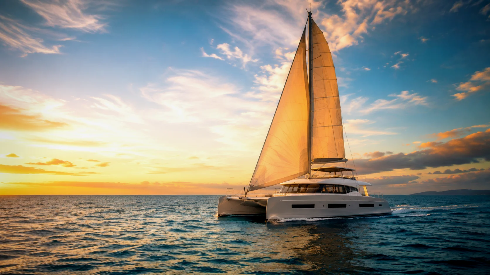
Small groups. Real crew. Private catamaran. No fixed schedule.
01 What we do
Eagle Ray Expeditions designs and leads small-group ocean expeditions combining sailing, diving, and wildlife encounters in Baja California Sur. Built for people who want more than a boat.
They sell trips.
We design human expeditions.
I didn't want to sell boats. I wanted to build the kind of trip I'd actually want to be on — with people who know the ocean, not just how to hand you a set of keys.
— Thibault Poirson De Cardon, Founder
02 Who you sail with

Founder
Founder & Expedition Host
I have spent more than ten years building things around the ocean in Mexico, and Eagle Ray is the one I care about most. I built the Baja network myself — the captains, the chefs, the expedition leaders — one conversation at a time. I am the one who answers your WhatsApp, before, during and after your trip, because I would rather you talk to the person who is accountable for the trip than to an office.
Direct line, no call center · +52 55 6809 0942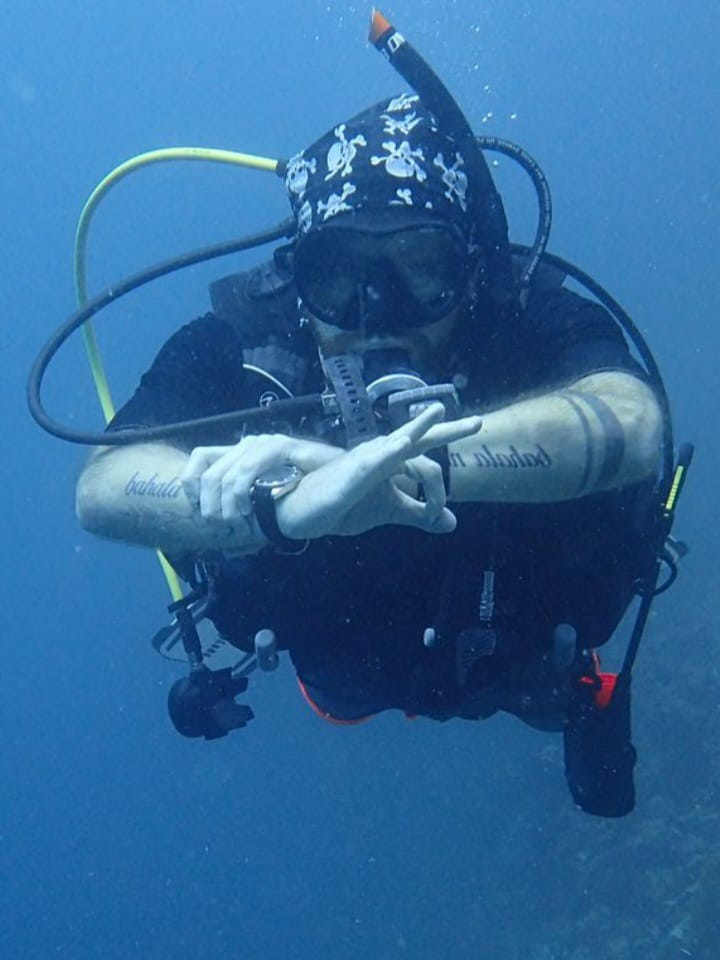
Expedition Leader — Scuba
I spent years running guest experience at the Ritz-Carlton and the Mandarin Oriental before I became a dive instructor and a surfer. I bring that five-star, guest-first instinct to every dive briefing — the one who turns a boat full of strangers into a crew within a day.
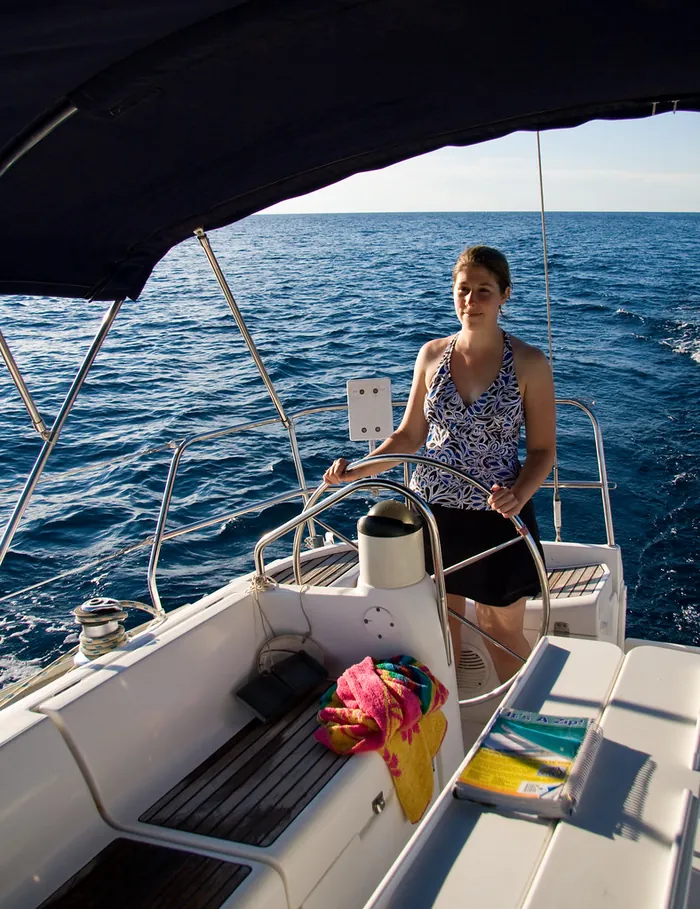
Captain
I have spent years navigating the Sea of Cortez, and before that some of the most demanding private yachts in the world. I know this water in every season — where the wind bends around the islands, which anchorage holds when the north wind comes through, and how a week reshapes itself when the sea decides otherwise.

Captain
I'm a civil engineer who became a freelance captain, splitting my time between La Paz and Mexico City. Eight years running industrial and energy operations before I moved to the helm — I'm the one who reads the weather routing and keeps the boat itself ready, trip after trip.
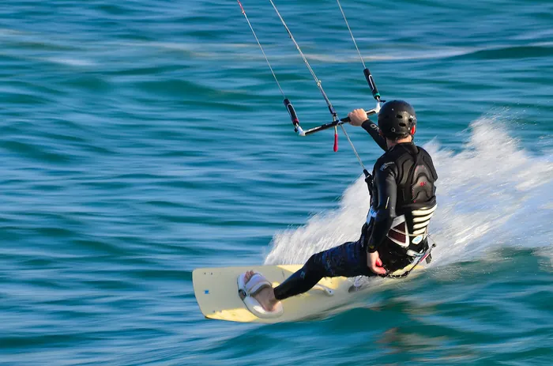
Expedition Leader
Between the wind of La Ventana and the water of the Sea of Cortez, this is home for me. I lead the days on the water and I read the group before the group reads itself — when to push for one more dive, and when the best call is to anchor and do nothing at all.
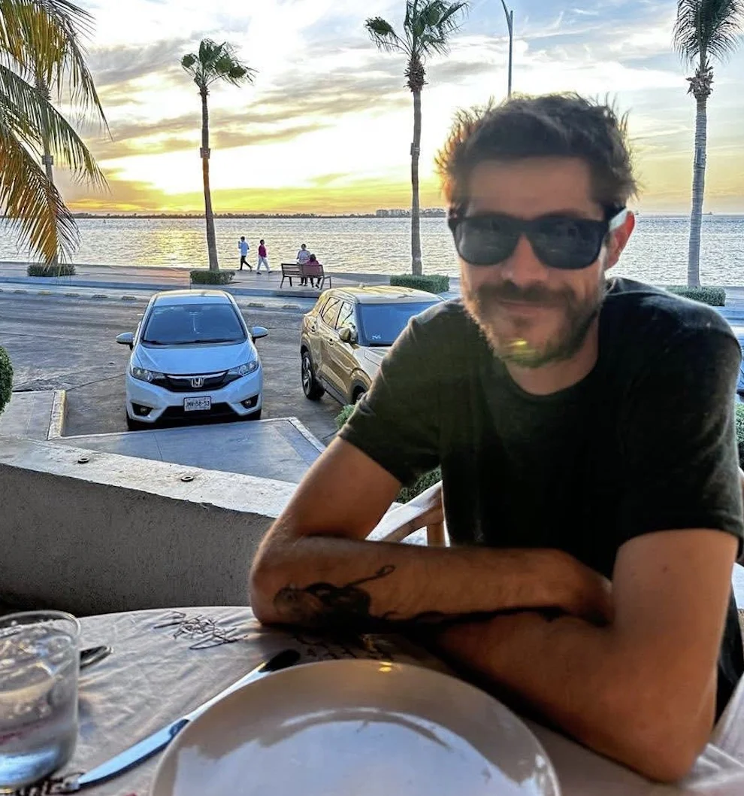
Gold Chef
I've spent 15+ years cooking aboard boats and superyachts, including private-chef work for senior executives. Tested and confirmed on the July Baja pilot — restaurant technique, in a galley kitchen.
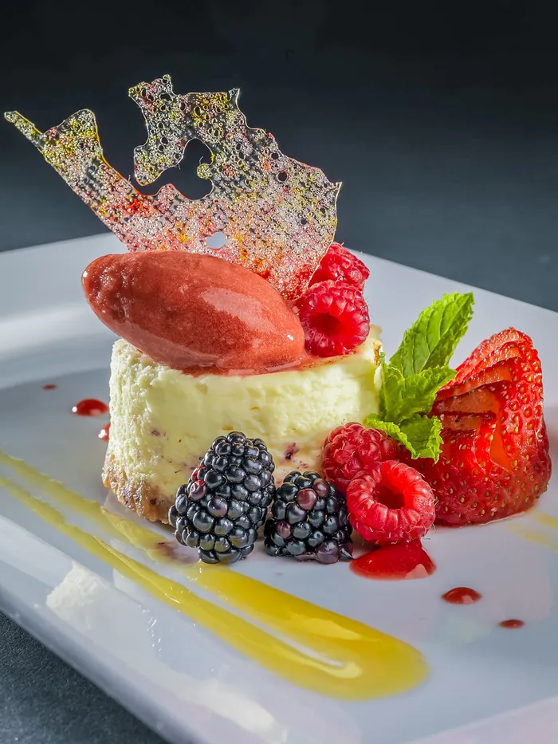
Silver Chef
I am an entrepreneur and I founded my own pastry business. I cook on board the way I built that: from scratch, with attention, and with the small extra thing nobody asked for but everybody remembers.

Expedition Leader
I'm a Brazilian dive instructor with six years in Baja California. Before this I worked in corporate marketing, which turned out to be the perfect training for reading a boat full of guests. Tested and confirmed on the July Baja pilot.
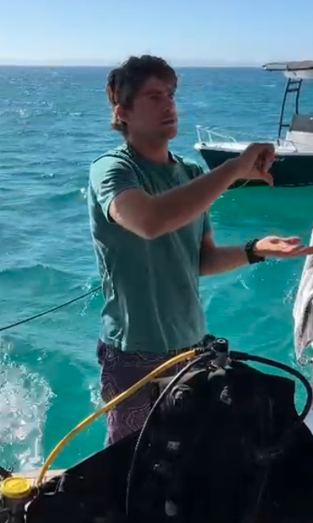
Expedition Leader
I've been a dive instructor since I was 20, with liveaboard crew experience in the Revillagigedo Islands. I once delivered a sailboat solo from Loreto to La Paz — 30 hours, no autopilot, no sleep. I split my time between La Paz and Los Cabos.

Captain & Expedition Leader
I'm a captain and expedition leader who specializes in kite and freediving, based in Baja California. I bring a calm, grounded presence on board — even the most wound-up first-timer settles down within a day at sea with me.

Captain & Filmmaker
I am a Yacht Master 200GT, PADI Dive Instructor, IKO Kitesurf Instructor, freediving and spearfishing guide, and a drone pilot. It means I can take you under the water, across it, and film the part you will want to keep.
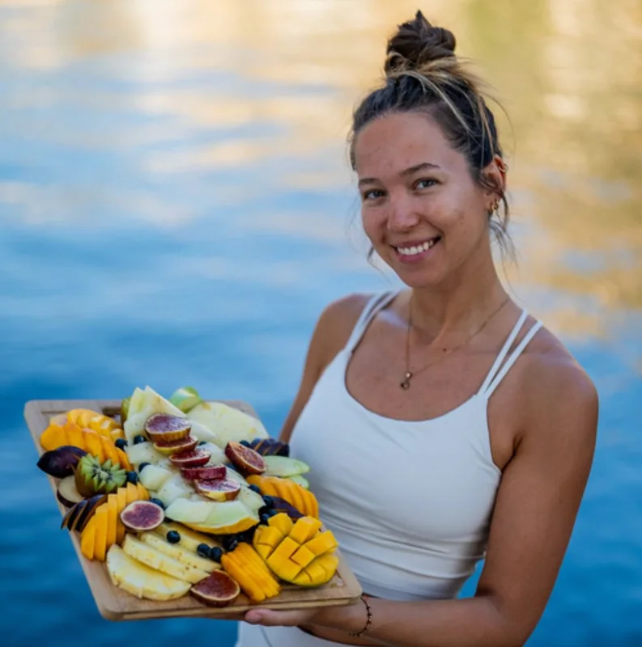
Stewardess, Chef & Filmmaker
I cook, I work the deck, I train people, and I film. On a small boat that mix is the point — the same person who plans dinner is the one who gets you moving in the morning and captures the day as it happens.
The roles of the Expedition Leader
At the center of every trip: a captain or first officer who has spent years reading this ocean, its wind, its currents, what changes month to month. Someone who was diving and freediving this water long before it was a job.
Eagle Ray's expedition leaders know how to read the group before the group reads itself — when to push, when to disappear, when to plan nothing at all. And they notice the moments that actually stay with people: the dive nobody expected to do, a conversation at 2am, the morning the wind never came.
Flexible by nature. Safety always comes first. And a direct line to Thibault — no call center, no chatbot.
03 Where we sail
Cousteau's name for the Sea of Cortez. A narrow gulf that concentrates what other oceans spread across thousands of miles — cold upwellings, deserted islands, and a density of life that still surprises people who've sailed it for years. We work the stretch between La Paz, Espíritu Santo, and Cerralvo.
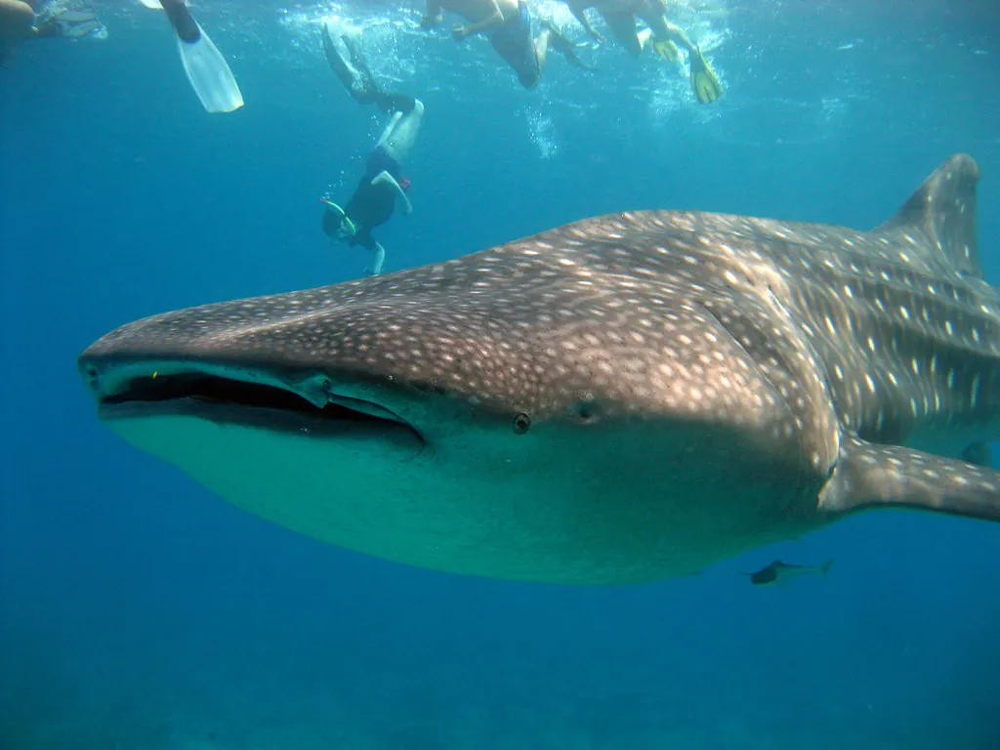
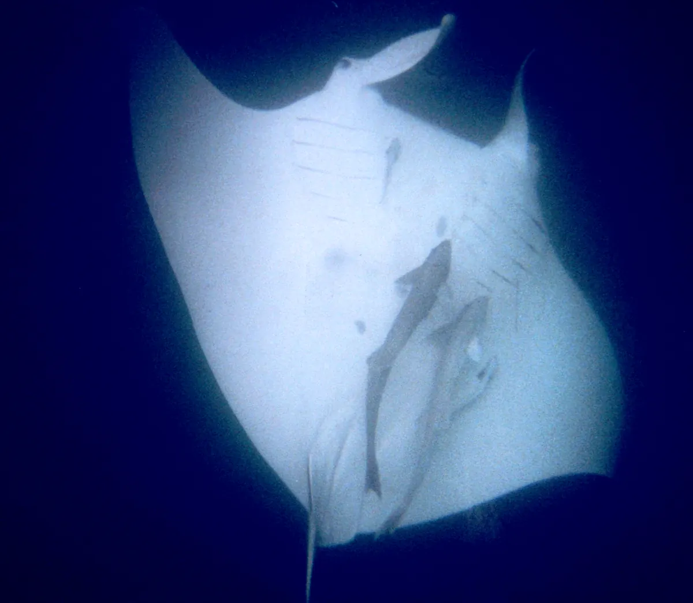
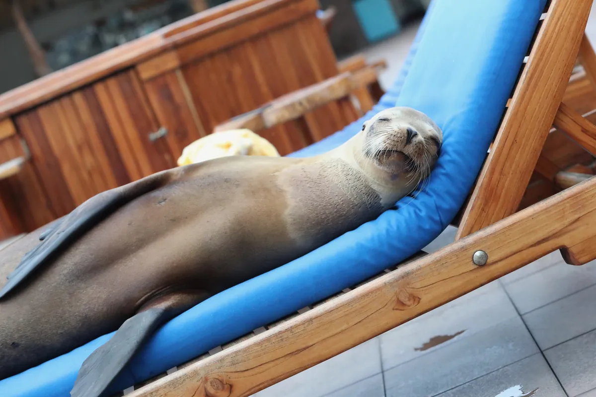
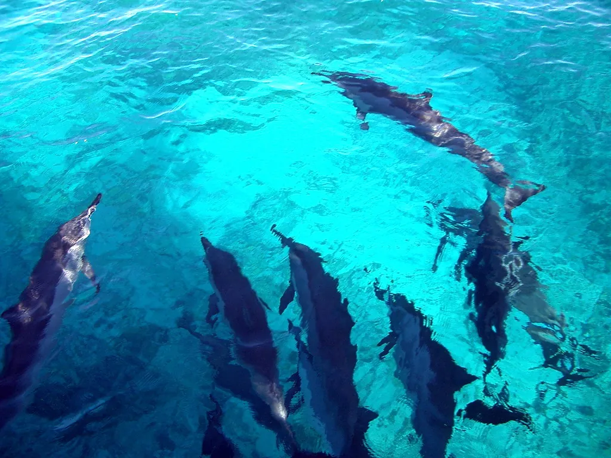
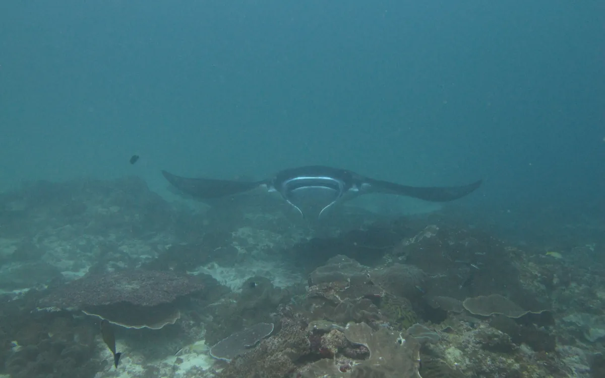
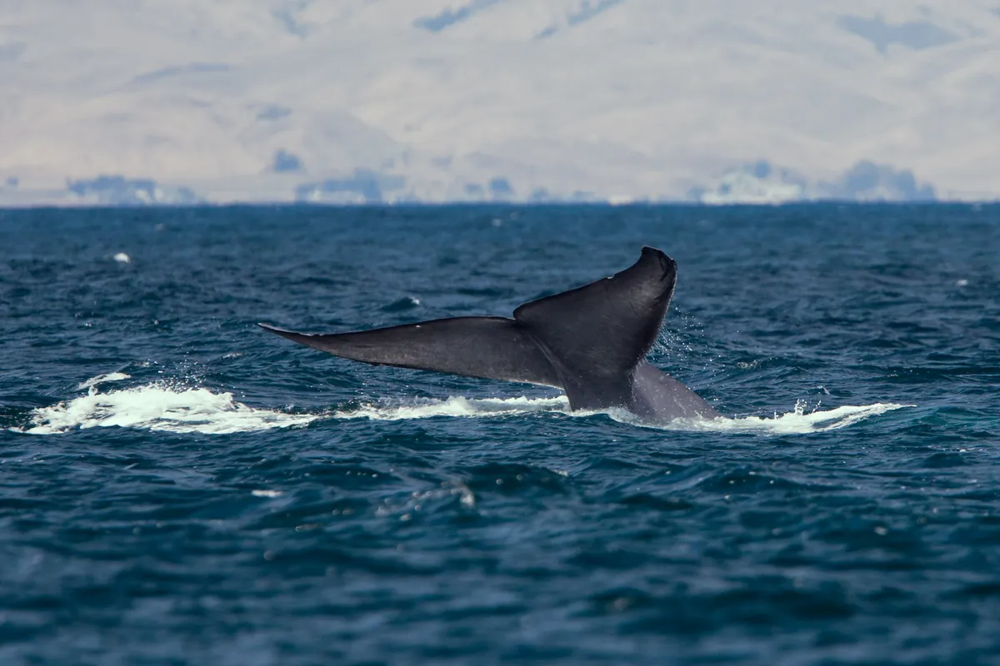
Whale sharksOct – Apr · Bahía de La Paz
Sightings are never guaranteed. These are wild animals in open water — what we can offer is the season, the place, and the odds.
Espíritu Santo is a protected national park and part of the UNESCO World Heritage Site "Islands and Protected Areas of the Gulf of California." We anchor only at authorized buoys, and sightings follow the distances and timing set by regulation. Wildlife isn't guaranteed — it's wildlife.
04 Three real routes
Not packages — the three directions we tend to sail out of La Paz, with a rough four-day itinerary. All of it reshuffles if the north wind picks up, or if someone wants one more day in a cove.
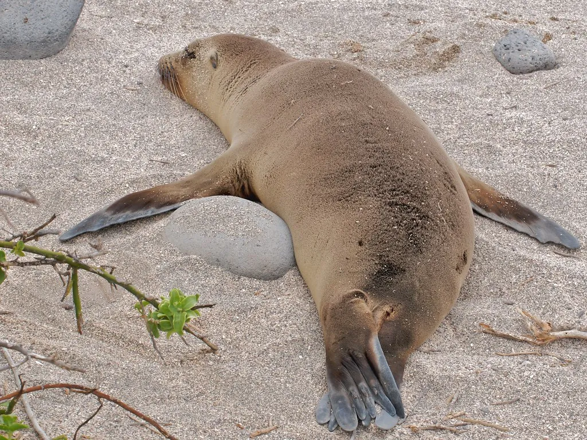
Wildlife-first: sea lions, mangroves, and the white-sand coves that make this the route most people underestimate.
Late-morning departure with the thermal breeze, a few hours of sailing to the first anchorage, and a reconnaissance snorkel before lunch.
Two sessions with the Los Islotes colony. Juveniles come within inches of your mask and stay for the whole dive.
Mangrove channels by kayak in the morning, an empty-beach landing in the afternoon, dinner on deck with the island behind you.
Downwind sail back, one last swim stop at Playa Bonanza, marina arrival mid-afternoon.
"Los Islotes never gets old — swimming with the sea lion colony is the moment every guest remembers first."
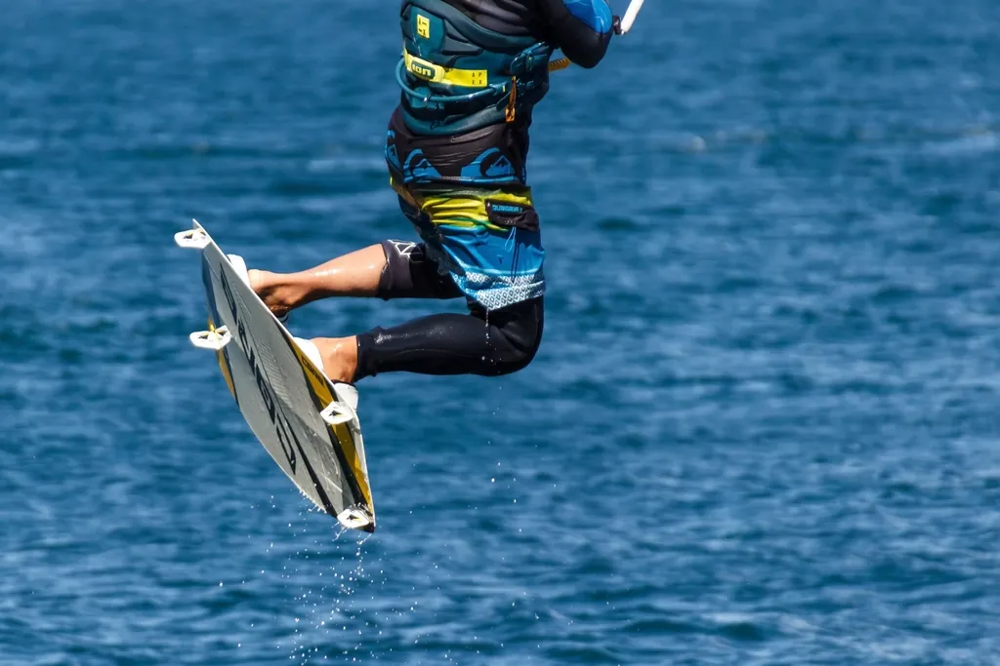
Wind-first: kite and wingfoil sessions built around the thermal that gives La Ventana its name.
Morning sail down the channel, gear rigged on deck before the afternoon thermal fills in.
A full day on the water — the crew includes a kite and wingfoil instructor, so beginners and experienced riders both have a plan.
Wind eases by late afternoon; the boat swings to a quiet anchorage for a slow dinner on deck.
Early departure to beat the building breeze, back in the marina before midday.
"When the wind picks up in La Ventana, everything else stops mattering."
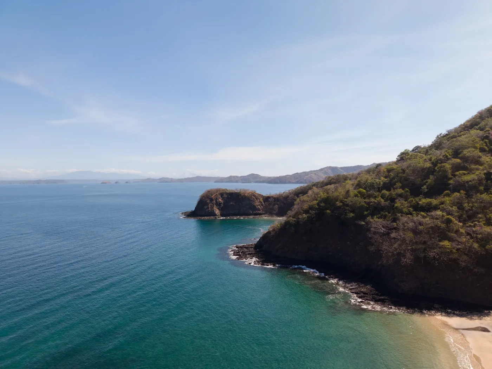
Reef and paddle-first: shallow turquoise water, easy snorkeling, and a slower pace than the other two routes.
A short sail to one of the most photographed bays on the gulf, usually empty by early evening.
Shallow reef, warm water, and a pace built for kids, grandparents, and everyone in between.
Paddleboards out at sunrise, a walk to a lookout point, and an afternoon with no plan at all.
Easy sail back with the afternoon breeze, marina arrival by early evening.
"Balandra's water color still surprises me, and I've sailed the Sea of Cortez for years."
These routes are a starting point. Every expedition adapts to weather, sea conditions, and what your group wants.
05 24°12′37.6″ N
Sail towards our objective of the day, coffee in hand while the anchor comes up.
Diving, kiting, swimming — whatever the crew is drawn to that morning.
The catch of the day, cooked and shared in the cockpit shade.
Shorelines, cliffs, water, unknown spots worth a slow paddle.
A pause to take it in — swim, surf, or just drift.
Back onboard. Stories, salt, and a reset before the next day.
06 What you might do
Tell us what appeals to you before you arrive — we will prepare a proposal and the rest will get decided onboard, day by day, by what the sea and your mood allows.
Espíritu Santo is a protected national park (UNESCO Biosphere Reserve). Eagle Ray operates in full respect of regulated zones.
07 Your expedition
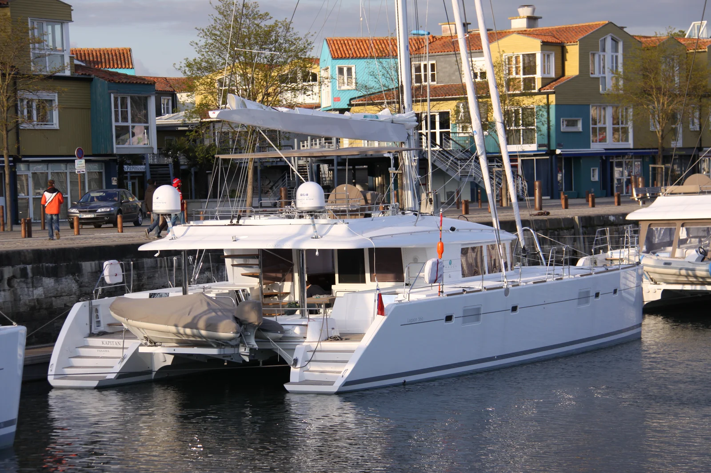
Your home on water
4 double cabins, 4 private bathrooms, spacious indoor/outdoor living, 2024 model. Ideal for families and groups who want maximum space to spread out.
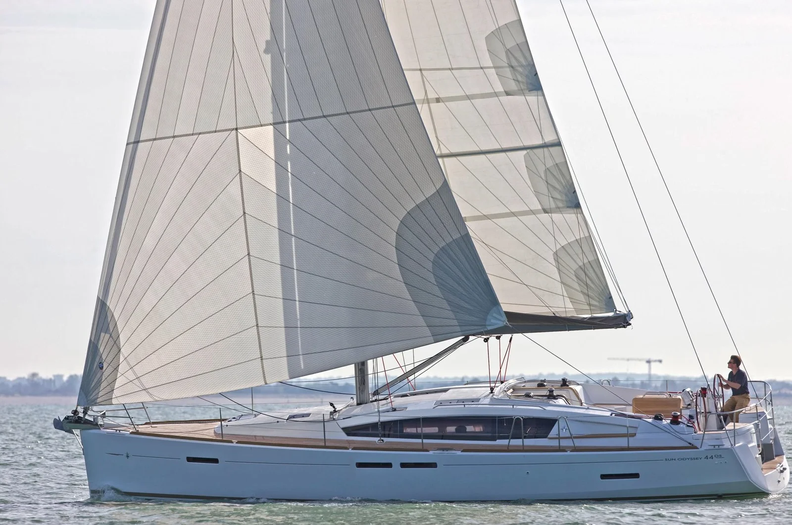
Elegance at sea
4 double cabins with private bathrooms, spacious cockpit and sun deck, refined finishes, smooth sailing performance. Ideal for a more design-forward feel.
Always included
À la carte / not included
08 Questions
From an intimate group of friends to a full family reunion — expeditions typically run from a handful of guests up to larger groups, fully private. It's your boat, your crew, your pace.
Yes. Routes and activity pace adapt to whoever's on board — a family with young kids and grandparents sails very differently from a group of divers, and we plan for that from the first conversation.
Parents remain responsible for their children at all times. Our crew keeps a close eye during activities and briefs every family on boat safety before departure.
Your skipper has final say on the water. Routes, anchorages, and activities adjust to wind, swell, and visibility — safety always outranks the original plan.
Your private catamaran, professional skipper, dinghy with motor, snorkeling gear, park permits, boat prep, and full coordination from Thibault before and during your trip. Food, drinks, guided diving/kite activities, and travel insurance are booked à la carte.
We recommend reaching out 6–8 weeks ahead for the best boat and date availability, though we do our best to accommodate shorter notice.
Only with your permission. If you're comfortable being featured, our storytelling crew may ask to share a few moments — otherwise, your trip stays entirely private.
Today, every expedition sails out of La Paz, Baja California Sur. It's where our boats, crew, and permits are based.
Still have a question? Contact us directly →
09 Build your expedition
4 quick questions. At the end, WhatsApp opens with your expedition already drafted — Thibault gets the full picture and replies with a real proposal within 48 hours, not a "thanks for your interest."
Baja California Sur